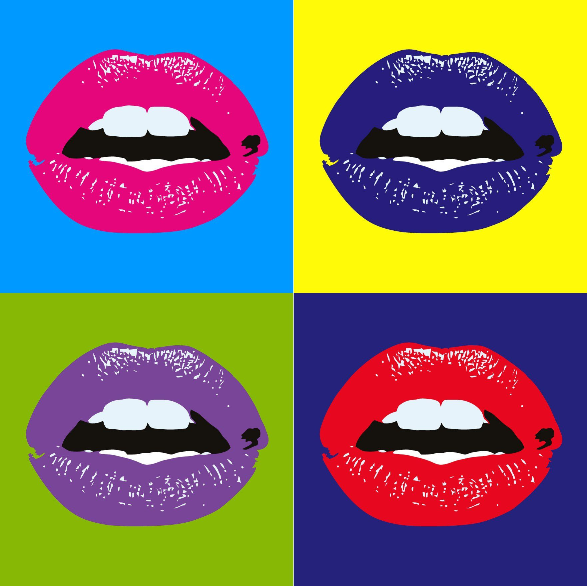
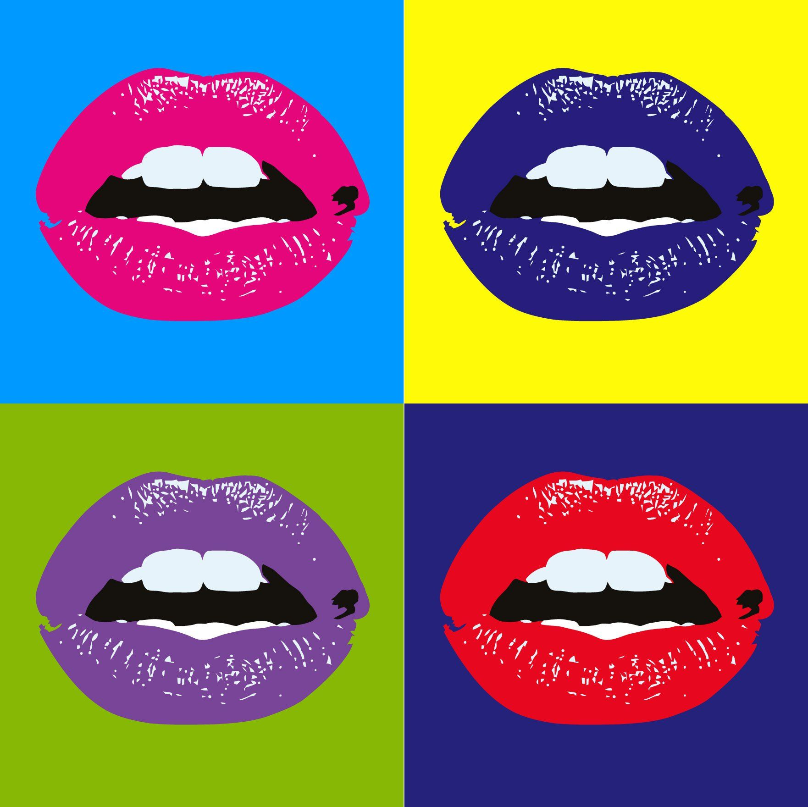

¡Bienvenidos al mundo

del Pop Art!
 



El Pop Art fue un movimiento artístico que nació en Inglaterra en los años 50 y alcanzó su auge en Estados Unidos durante la década de 1960. Se caracterizó por transformar objetos cotidianos, anuncios, cómics y celebridades en obras de arte, rompiendo con la división entre el arte “culto” y la cultura popular. Frente al expresionismo abstracto, serio e introspectivo, el Pop Art propuso un lenguaje fresco, inmediato y reconocible. Usó colores vibrantes, repetición de imágenes, ironía y humor para reflejar y criticar la sociedad de consumo y el poder de los medios de comunicación. Entre sus principales exponentes se encuentran Andy Warhol, con sus serigrafías de Marilyn Monroe y las latas de sopa Campbell; Roy Lichtenstein, con sus obras basadas en cómics; y Richard Hamilton, pionero británico. También destacaron David Hockney, Keith Haring y Tom Wesselmann. El Pop Art dejó un legado duradero: transformó la forma de entender el arte y aún inspira al diseño, la publicidad, la moda y la cultura visual contemporánea.
Andy Warhol creó más de 32 obras basadas en latas de sopa Campbell, una de las cuales se vendió por millones de dólares.
El Pop Art fue una respuesta al expresionismo abstracto, que era más serio y emocional, mientras que el Pop Art era más accesible y divertido.
Roy Lichtenstein se inspiró en cómics para crear sus obras más famosas, utilizando puntos de impresión (Ben-Day dots) para imitar el estilo de impresión de los cómics.
El Pop Art no solo influyó en la pintura, sino también en la moda, el diseño gráfico, la música y la publicidad.
Keith Haring comenzó su carrera dibujando en las paredes del metro de Nueva York, llevando el arte urbano a las galerías.
El Pop Art sigue siendo una fuente de inspiración para artistas contemporáneos y diseñadores gráficos en todo el mundo.